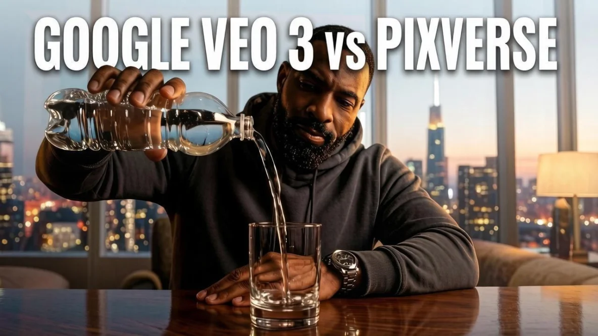

Битва видео-ИИ: Google Veo 3 против Pixverse — кто сделает круче на одном промте

Я устроил жёсткое испытание для двух мощнейших видеомоделей: Google Veo 3 и Pixverse. Условия — максимально честные. Один и тот же промт на английском языке с кучей технических деталей: съёмка на 35-миллиметровый объектив, киношный свет, точная физика воды, звук наливания и даже микромимика с подмигиванием. Тестировал всё на платформе-агрегаторе Videomaker.
Больше полезного про нейросети — простым языком, каждый день в нашей группе ВКонтакте
Перейти во ВКонтакте →Сразу предупреждаю: из-за ограничений бесплатных тарифов выбрать настоящее HD-качество (1080P) не получилось. Но даже в таких условиях нейросети показали, на что способны.
Участник первый: Google Veo 3
Модель конца 2024 года, которую регулярно обновляют. Один раунд генерации стоит 10 кредитов. И вот что вышло.
Плюсы: Картинка в 720P выглядит шикарно. Физика воды — просто идеал: струя течёт реалистично, брызги разлетаются естественно, стакан не плывёт и не деформируется. А главное — звук! Нейросеть выдала полное аудиосопровождение прямо из текста: слышно и бульканье бутылки, и журчание воды. Персонаж получился живым, с натуральной киношной улыбкой.
Минусы: Цена кусается — 10 кредитов за один ролик. И с подмигиванием вышла накладка: вместо чёткого движения века персонаж просто прищурился. Не провал, но до идеала далеко.
Участник второй: Pixverse AI
Модель 2024–2025 годов. Раунд стоит всего 3 кредита. Смотрим, что удалось выжать за эти деньги.
Плюсы: Pixverse выдал настоящий актёрский перформанс. Он единственный, кто идеально попал в эмоцию — хитрое голливудское подмигивание прямо в камеру. В конце нейросеть сделала крутой художественный приём: плавный наезд объектива на лицо персонажа. И всё это за смешные 3 кредита.
Минусы: Качество ограничено 540P — детализация ниже, чем у конкурента. Физика воды на старте хромает: капли летят как стеклянные шарики, неестественно и резко. И самое обидное — звука нет вообще. Тумблеры аудио заблокированы платным тарифом, так что ролик получается немым.
Итог батла
Ничья, но с разным характером. Обе модели — современные и мощные, но у каждой своя философия.
Google Veo 3 — выбор для тех, кому важна безупречная физика, высокая чёткость и атмосферный звук. Идеально для рекламных роликов, предметной съёмки и всего, где важна детализация окружения.
Pixverse — инструмент для работы с персонажами. Эмоции, живая мимика, динамика камеры — здесь он силён. И стоит в три раза дешевле. Но звук придётся добавлять отдельно.
Кто победил? Решать вам. Я выложил оба ролика в оригинальном качестве у себя в Telegram-канале. Там можно посмотреть их в альбоме и сравнить вручную, свайпая вбок. Полный промт, который я использовал для теста, тоже лежит там.